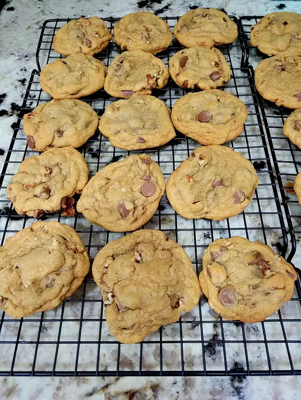

Chocholate Cookie

Description:
Greek salad or horiatiki salad (Greek: χωριάτικη σαλάτα[a] or θερινή σαλάτα[b]) is a popular salad in Greek cuisine generally made with pieces of tomatoes, cucumbers, onion, green bell pepper slices, feta cheese (usually served as a slice on top of the other ingredients), and olives (typically Kalamata olives) and dressed with salt, Greek oregano, and olive oil. A common addition is caper berries (especially on the Dodecanese islands). Greek salad is often imagined as a farmer's breakfast or lunch, as its ingredients resemble those that a Greek farmer might have on hand.
Ingredients:
- 1 cup butter, softened
- 1 cup white sugar
- 1 cup packed brown sugar
- 2 eggs
- 2 teaspoons vanilla extract
- 1 teaspoon baking soda
- 2 teaspoons hot water
- ½ teaspoon salt
- 3 cups all-purpose flour
- 2 cups semisweet chocolate chips
- 1 cup chopped walnuts
Cooking Steps:
- Preheat oven to 350 degrees F (175 degrees C).
- Cream together the butter, white sugar, and brown sugar until smooth. Beat in the eggs one at a time, then stir in the vanilla. Dissolve baking soda in hot water. Add to batter along with salt. Stir in flour, chocolate chips, and nuts. Drop by large spoonfuls onto ungreased pans.
- Bake for about 10 minutes in the preheated oven, or until edges are nicely browned.
Note:
Nutrition Facts Per Serving: 298 calories; protein 3.6g; carbohydrates 38.9g; fat 15.6g; cholesterol 35.8mg; sodium 165.8mg.